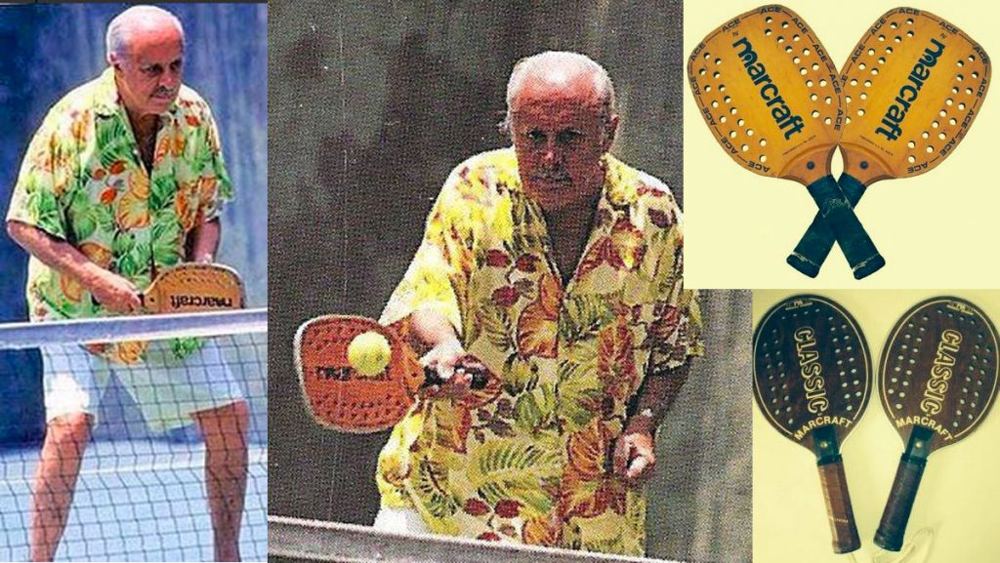
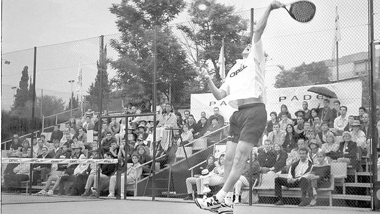

ORIGENES DEL PADEL
Tres países marcan la historia del Pádel: México, España y Argentina… Conoce más sobre la historia de nuestro deporte
La historia del Pádel lleva implícita muchos “giros”, a través de distintos países, aunque son México, España y Argentina los que han marcado el camino. El origen etimológico de su palabra es, en el inglés, “paleta”, por eso hay mucha gente, a lo largo de la historia, que ha identificado a este deporte bajo el concepto del “tenis con paleta”.
Nacimiento del Pádel en México
El Pádel nace en México, específicamente en Acapulco, gracias a Enrique Corcuera, un empresario quien en el año de 1962, dispuso una de las paredes de su casa, y añadió otras paredes y vallas metálicas para cerrar el lugar, no dejar pasar la vegetación y poder jugar con una pala de madera y una pelota a lo que él mismo llamó Paddle-Tenis.
Además, añadió una red de tenis en el centro y de esta forma creó una pista improvisada, de medidas distintas a las del tenis, que daría lugar a uno de los juegos más entretenidos y en expansión del momento. Corcuera, un hombre de negocios de México, se convirtió en el padre de este deporte, y con ciertas nociones que le daban una breve visión sobre lo que quería recrear y su finalidad, y su creatividad, lo llevaron a materializar este nuevo deporte poco a poco en su propia casa.

El Pádel llega a España
Enrique Corcuera, una persona rodeada de amigos y de contacto constante con personas también de negocios e importantes de otros países, recibía visitas en su hogar, donde practicaba el deporte del Pádel con todo aquel que estuviera dispuesto a pasar un buen rato y relajarse en dichas reuniones.
Entre ellos, el príncipe Alfonso de Hohenlohe, quien además de ser un noble, poseía propiedades en destinos turísticos, y fue el fundador de la marca Marbella de hoteles e impulsor del desarrollo del turismo en nuestro país. En una visita a casa de Corcuera, se maravilló ante este nuevo deporte creado por el anfitrión.
De vuelta en España hizo instalar las dos primeras pistas en Marbella Club adaptándolas a sus propios estándares. Pronto se erigió como una gran distracción entre la clientela de su hotel.
Argentina, tierra madre del Pádel
Tal cual el Pádel llegó a España, con una casual visita del noble Hohenlohe, igualmente se trasladó a otros países, especialmente y masivamente a un país más cercano a México.
Estamos hablando de Argentina; muchos argentinos que descansaban en el Hotel Marbella y se encontraban fascinados por el deporte, decidieron adaptarlo en sus propias localidades y seguir disfrutando del Pádel, en concreto Julio Menditeguy.
Pero en esta época el jugar al Pádel estaba un poco limitado a todas las personas, y había solo una pequeña elite que lo conocían y gozaban de este juego. Eran quienes visitaban a Corcuera, viajaban a Marbella de vacaciones, o pertenecían a ciertos clubes de prestigio como el Club del Tortugas, donde se podía conocer a personas influyentes con la instalación de una pista privada en sus casas.
Para el resto del mundo el Pádel tardo un poco más en llegar, aunque acabara extendiéndose a otros países de Latinoamérica como Brasil o Uruguay.
Pero es en Argentina donde este deporte tiene su auge, ya que al ser instalado en los clubes más reconocidos y atractivos, múltiples personalidades importantes y deportistas entraron en contacto con esta nueva disciplina.

Se realizaron las mejoras pertinentes, como canchas más grandes y cómodas, lo que sería un factor esencial en su propagación por todo el país, llegando a convertirse en el segundo deporte más jugado por los argentinos, y siendo una disciplina que atrajo la atención de todo el mundo y de muchos de los atletas más importantes de la época.
Desde 1982 empezó su rápido ascenso de popularidad entre quienes deseaban usar su tiempo libre en un deporte que los hiciera liberar endorfinas, realizar algo de ejercicio y a su vez integrarse con amigos, compañeros, familiares, etc.
Desde entonces ha tenido lugar múltiples sucesos trascendentales en la historia del Pádel en general, como lo es la conceptualización de un reglamento, que establecía los fundamentos técnicos y reglas a seguir de manera más concreta, todo esto a raíz de la creación de la Asociación de Pádel Argentino, y de forma local se realizaron competiciones en forma de torneo, hasta llegar al encuentro internacional de Pádel entre España y Argentina.
Una expansión sin fin
En España se empieza a expandir por distintos puntos de la Península… Andalucía, Madrid, Barcelona, Galicia, País Vasco, etc. A día de hoy se hace difícil calcular el número de pistas que puede haber en nuestro país
Ya en 1991 es cuando se constituye en Madrid la Federación Internacional de Pádel, siendo un español el presidente, Julio Alegría Artiach. Este fue quien se encargó de crear un circuito internacional y concretar un reglamento a nivel mundial.
En 1993 el Pádel se consolida como modalidad deportiva tras reconocimiento del Consejo Superior de Deportes. La extendiendo poco a poco se está dando por países de Europa como Suecia, Reino Unido, Francia, Alemania, etc. De hecho se han ido sucediendo las distintas federaciones en estos países, logrando un gran éxito en cuanto al número de federados y construcción de instalaciones. España en este sentido, es reconocida como la impulsora del Pádel en Europa.